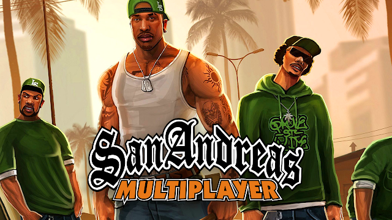

Baixe Samp Aqui:
SAMP é um pequeno programa que permite ao usuário jogar o GTA San Andreas em rede multiplayer online com seus amigos ou em diferentes servidores disponiveis. Com o GTA SAN RIP você pode economizar espaço em disco, a versão RIP não possui as radios, o que reduz consideravel o tamanho de download. Sobre o GTA SAN: Agora, é o início dos anos 90. Carl tem que voltar à sua casa. A sua mãe foi assassinada, a sua família tem vindo a desfazer-se e os seus amigos de infância estão a caminhar para o desastre. Jogue grátis o clássico da Rockstar no seu PC, GTA San. baixe via torrent o Jogo GTA San Andreas RIP + Online completo para PC.
IP do Servidor:
rpg.nwdgames.net:7777